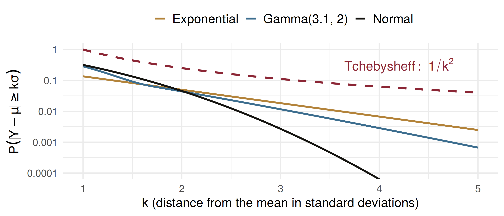
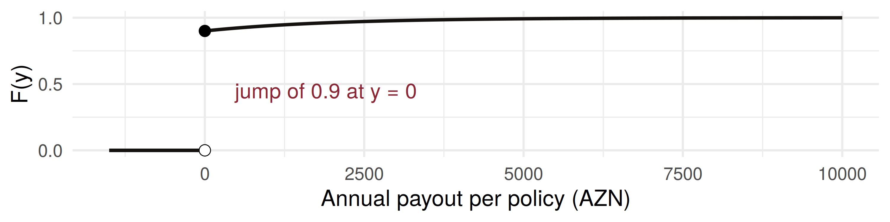

mean median exp_mu
110518 108305 108329 Mathematical Statistics
Other Expected Values, Tchebysheff’s Theorem, and Chapter 4 in Review
Samir Orujov, PhD
ADA University, School of Business
Information Communication Technologies Agency, Statistics Unit
2026-09-24
🎯 Learning Objectives
By the end of this lecture, you will be able to:
Compute moments \(\mu^{\text{ʹ}}_k\) and the moment-generating function of a continuous random variable
Derive the gamma and normal MGFs, and read moments off them
Prove Tchebysheff’s theorem for a density, and use it when only \(\mu\) and \(\sigma\) are trusted
Evaluate \(E[g(Y)]\) for a payout with a break in it, and for a loss with a point mass at zero
Assemble Chapter 4 into one toolkit
🗺️ Where We Are
Wackerly §§4.9–4.11
Wednesday finished the catalogue with the beta, and a rule for choosing among the densities: theory, then support, then the histogram.
Today: other expected values, Tchebysheff’s theorem for continuous variables, and Chapter 4 in review. Three questions a Baku risk office asks every week:
- A fund’s log return is normal. What is the expected value of the money, \(E(e^{R})\)?
- Only \(\mu\) and \(\sigma\) are known. How often can a day move \(3\sigma\)?
- 90% of motor policies pay nothing. What does a policy cost after a deductible?
📐 Definitions 4.13 and 4.14
Definitions 4.13 and 4.14
For a continuous \(Y\), the \(k\)th moment about the origin is \(\mu^{\text{ʹ}}_k = E(Y^k)\) and the \(k\)th central moment is \(\mu_k = E[(Y - \mu)^k]\).
The moment-generating function is \(m(t) = E(e^{tY})\). It exists if \(m(t)\) is finite for \(|t| \le b\), for some \(b > 0\).
The integral replaces the sum, and nothing else changes. Expand \(e^{ty}\) inside the integral: \[m(t) = 1 + t\mu^{\text{ʹ}}_1 + \frac{t^2}{2!}\mu^{\text{ʹ}}_2 + \cdots, \qquad m^{(k)}(0) = \mu^{\text{ʹ}}_k\] so Theorem 3.12 holds for continuous variables as it stands.
📐 Example 4.13: The Gamma MGF
\[m(t) = \int_0^\infty e^{ty}\,\frac{y^{\alpha-1}e^{-y/\beta}}{\beta^\alpha\Gamma(\alpha)}\,dy = \frac{1}{\beta^\alpha\Gamma(\alpha)}\int_0^\infty y^{\alpha-1}\exp\!\left[\frac{-y}{\beta/(1-\beta t)}\right]dy\]
For \(t < 1/\beta\) the integrand is the variable part of a gamma density with scale \(\beta/(1-\beta t)\). Its integral is the reciprocal of that density’s constant, \([\beta/(1-\beta t)]^{\alpha}\,\Gamma(\alpha)\).
\[m(t) = \frac{1}{(1-\beta t)^{\alpha}}, \qquad t < \frac{1}{\beta}\] Recognise a kernel; do not integrate. The trick recurs all semester.
🔥 Example 4.14: Gamma Moments
Expand \((1-\beta t)^{-\alpha} = 1 + t(\alpha\beta) + \dfrac{t^2}{2!}\,\alpha(\alpha+1)\beta^2 + \cdots\), so \[\mu^{\text{ʹ}}_k = \alpha(\alpha+1)\cdots(\alpha+k-1)\,\beta^k\]
Daily gas demand \(Y\) at a distribution node (million m³) is gamma with \(\alpha = 4\), \(\beta = 2.5\): \[\mu = 10, \qquad \mu^{\text{ʹ}}_2 = 4 \times 5 \times 2.5^2 = 125, \qquad \sigma^2 = 125 - 10^2 = 25 = \alpha\beta^2\]
A balancing cost of \(C = 0.8\,Y^2\) thousand AZN has \(E(C) = 0.8 \times 125 = 100\), not \(0.8 \times 10^2 = 80\). \(E(Y^2) \ne [E(Y)]^2\).
📐 Example 4.16: The Normal MGF
Theorem 4.12: the MGF of \(g(Y)\) is \(E[e^{t g(Y)}] = \int e^{t g(y)} f(y)\,dy\).
Take \(Y \sim N(\mu, \sigma^2)\) and \(g(Y) = Y - \mu\). Complete the square in the exponent; what remains is a normal density with mean \(\sigma^2 t\), which integrates to 1: \[m_{Y-\mu}(t) = e^{t^2\sigma^2/2}\]
Since \(e^{tY} = e^{\mu t}e^{t(Y-\mu)}\), Exercise 4.138 gives \(\; m_Y(t) = \exp\!\left(\mu t + \tfrac{1}{2}t^2\sigma^2\right)\).
Uniqueness: identical MGFs mean identical distributions. An MGF of this form is a normal.
💰 The Value of a Fund
100,000 AZN sits in an equity fund whose annual log return is \(R \sim N(0.08,\, 0.20^2)\). The value in a year is \(V = 100{,}000\,e^{R}\), and \(E(e^{R})\) is the MGF at \(t = 1\): \[E(V) = 100{,}000\; e^{0.08 + 0.02} = 110{,}517 \text{ AZN}\]
\(100{,}000\,e^{0.08} = 108{,}329\) is the median. The extra \(\sigma^2/2\) is what volatility adds to the mean.
📐 Theorem 4.13: Tchebysheff
Theorem 4.13
Let \(Y\) be a random variable with finite mean \(\mu\) and variance \(\sigma^2\). Then, for any \(k > 0\), \[P(|Y - \mu| < k\sigma) \ge 1 - \frac{1}{k^2} \qquad \text{or} \qquad P(|Y - \mu| \ge k\sigma) \le \frac{1}{k^2}\]
Theorem 3.14 again, now with the continuous proof. A Baku bank’s share has daily return mean 0.04% and sd 1.5%. A move of 4.5 points from the mean is \(k = 3\): \[P(|R - \mu| \ge 3\sigma) \le 1/9 = 0.111 \quad \text{for any distribution; a normal gives } 0.0027.\]
✏️ The Proof: Throw Away the Middle
Split the variance at \(\mu \pm k\sigma\): \[\sigma^2 = \int_{-\infty}^{\mu-k\sigma}(y-\mu)^2 f(y)\,dy + \int_{\mu-k\sigma}^{\mu+k\sigma}(y-\mu)^2 f(y)\,dy + \int_{\mu+k\sigma}^{\infty}(y-\mu)^2 f(y)\,dy\]
The middle integral is \(\ge 0\): drop it. In both tails \((y-\mu)^2 \ge k^2\sigma^2\): replace it. \[\sigma^2 \ge k^2\sigma^2\left[P(Y \le \mu - k\sigma) + P(Y \ge \mu + k\sigma)\right] = k^2\sigma^2\,P(|Y-\mu| \ge k\sigma)\]
Divide by \(k^2\sigma^2\). Two things were thrown away: the middle mass, and the tails’ excess over \(k^2\sigma^2\). That waste is why the bound is loose.
🏦 Example 4.17: A Slow Branch
Mortgage approval times \(Y\) (days) at a Baku bank are gamma with \(\alpha = 3.1\), \(\beta = 2\): \(\mu = 6.2\), \(\sigma^2 = 12.4\), \(\sigma = 3.52\). A new branch takes 22.5 days.
22.5 exceeds \(\mu\) by 16.3 days, or \(k = 16.3/3.52 = 4.63\) standard deviations: \[P(|Y - 6.2| \ge 16.3) \le \frac{1}{4.63^2} = 0.0466\]
The bound says under 5% with no integral; the model says about 1 in 870. Either way, look at the branch.
📈 How Loose Is the Bound?

Log scale. At \(k = 3\) the bound is 0.111; the exponential’s tail is 0.018, the normal’s 0.0027.
🧠 Think-Pair-Share
A mobile operator’s monthly data use per subscriber, \(Y\) (GB), has MGF \[m(t) = (1 - 4t)^{-3}, \qquad t < 1/4\]
Four minutes, in pairs:
Name the distribution of \(Y\), and find \(\mu\) and \(\sigma\).
Give an interval that holds at least 75% of subscribers.
The fair-use cap is 40 GB. What does Tchebysheff say about the share above it?
✅ Think-Pair-Share: Solution
By uniqueness, \(Y\) is gamma with \(\alpha = 3\), \(\beta = 4\): \(\mu = 12\) GB, \(\sigma^2 = 48\), \(\sigma = 6.93\).
\(1 - 1/k^2 = 0.75\) gives \(k = 2\): \(12 \pm 13.86 = (-1.86,\ 25.86)\). Usage cannot be negative, so \([0,\ 25.86)\) holds at least 75%. The gamma itself puts 0.956 there.
- \(40 - 12 = 28\) GB is \(k = 28/6.93 = 4.04\) standard deviations: \[P(Y \ge 40) \le P(|Y - 12| \ge 28) \le \frac{48}{28^2} = 0.061\] At most 6.1%, from two numbers. The gamma gives 0.0028: the cap binds for about 1 subscriber in 360.
🧩 Optional §4.11: Point Masses
Two things Chapter 4 has not yet handled:
- a payout with a break in it, \(g(Y)\): Theorem 4.4 still gives \(E[g(Y)] = \int g(y)f(y)\,dy\), split at the break
- a variable with a point mass: most policies pay exactly 0, the rest pay a continuous amount
Definition 4.15
If \(F(y) = c_1F_1(y) + c_2F_2(y)\), with \(F_1\) the distribution function of a discrete \(X_1\), \(F_2\) that of a continuous \(X_2\), and \(c_1 + c_2 = 1\), then \[E[g(Y)] = c_1E[g(X_1)] + c_2E[g(X_2)]\]
🚗 Worked Example: A Motor Book
A policy pays nothing with probability \(c_1 = 0.9\). Given a claim, the loss is exponential with mean 2,000 AZN. So \(X_1 \equiv 0\) and \(X_2 \sim\) Exp(2000): \[E(Y) = 0.1 \times 2000 = 200, \qquad E(Y^2) = 0.1 \times 2 \times 2000^2 = 800{,}000\] \[V(Y) = 800{,}000 - 200^2 = 760{,}000, \qquad \sigma = 872 \text{ AZN}\]
With a 500 AZN deductible the insurer pays \(g(y) = \max(y - 500, 0)\): \[E[g(X_2)] = \int_{500}^{\infty}(x - 500)\,\frac{e^{-x/2000}}{2000}\,dx = 2000\,e^{-0.25} = 1557.6\] \(E[g(Y)] = 0.9 \times 0 + 0.1 \times 1557.6 = 155.76\) AZN: the deductible cuts the pure premium by 22%.
💻 The Motor Book, Simulated
mean sd deductible franchise
198.6 869.1 154.7 193.4 
A franchise deductible pays the whole loss once it passes 500: \(0.1 \times 2500\,e^{-0.25} = 194.70\) AZN.
🧭 Chapter 4 in Review
| Model | Support | \(E(Y)\) | \(V(Y)\) | \(m(t)\) |
|---|---|---|---|---|
| Uniform\((\theta_1, \theta_2)\) | \([\theta_1, \theta_2]\) | \((\theta_1+\theta_2)/2\) | \((\theta_2-\theta_1)^2/12\) | \(\dfrac{e^{t\theta_2}-e^{t\theta_1}}{t(\theta_2-\theta_1)}\) |
| Normal\((\mu, \sigma^2)\) | \((-\infty, \infty)\) | \(\mu\) | \(\sigma^2\) | \(e^{\mu t + t^2\sigma^2/2}\) |
| Gamma\((\alpha, \beta)\) | \((0, \infty)\) | \(\alpha\beta\) | \(\alpha\beta^2\) | \((1-\beta t)^{-\alpha}\) |
| Exponential\((\beta)\) | \((0, \infty)\) | \(\beta\) | \(\beta^2\) | \((1-\beta t)^{-1}\) |
| \(\chi^2(\nu)\) | \((0, \infty)\) | \(\nu\) | \(2\nu\) | \((1-2t)^{-\nu/2}\) |
| Beta\((\alpha, \beta)\) | \([0, 1]\) | \(\alpha/(\alpha+\beta)\) | \(\dfrac{\alpha\beta}{(\alpha+\beta)^2(\alpha+\beta+1)}\) | no simple form |
The method: pick the model by support and theory; any \(E[g(Y)]\) by Theorem 4.4; moments from the MGF; Tchebysheff when only \(\mu\), \(\sigma\) are trusted.
📝 Quiz #1: Reading an MGF
A trader’s quarterly FX gain (thousand AZN) has MGF \(m(t) = e^{2t + 8t^2}\). What is its distribution?
- Normal with \(\mu = 2\) and \(\sigma^2 = 16\)
- Normal with \(\mu = 2\) and \(\sigma^2 = 8\)
- Normal with \(\mu = 2\) and \(\sigma^2 = 4\)
- Gamma with \(\alpha = 2\) and \(\beta = 8\)
📝 Quiz #2: A Guarantee From Two Numbers
A factory’s monthly electricity bill has mean 42,000 AZN and sd 4,000 AZN, distribution unknown. At least what share of months fall within 10,000 AZN of the mean?
- \(0.84\)
- \(0.16\)
- \(0.60\)
- \(0.99\)
📝 Quiz #3: A Call Option
A Baku-listed bank’s share price in one month is uniform on \((18, 22)\) AZN. A call struck at 20 pays \(\max(S - 20, 0)\). What is its expected payoff?
- \(0.50\) AZN
- \(0\) AZN, since \(E(S) = 20\) equals the strike
- \(1.00\) AZN
- \(2.00\) AZN
📋 Key Formulas
| Statement | |
|---|---|
| Definition 4.13 | \(\mu^{\text{ʹ}}_k = E(Y^k)\), \(\quad \mu_k = E[(Y-\mu)^k]\) |
| Definition 4.14, Theorem 3.12 | \(m(t) = E(e^{tY})\), \(\quad m^{(k)}(0) = \mu^{\text{ʹ}}_k\) |
| gamma (Examples 4.13, 4.14) | \(m(t) = (1-\beta t)^{-\alpha}\), \(\quad \mu^{\text{ʹ}}_k = \alpha(\alpha+1)\cdots(\alpha+k-1)\beta^k\) |
| normal (Example 4.16) | \(m(t) = \exp(\mu t + t^2\sigma^2/2)\) |
| Theorem 4.13 | \(P(\lvert Y - \mu\rvert \ge k\sigma) \le 1/k^2\) |
| Definition 4.15 | \(E[g(Y)] = c_1E[g(X_1)] + c_2E[g(X_2)]\) |
📋 Summary
Moments and MGFs carry over from Chapter 3 with the sum replaced by an integral
The gamma MGF comes from recognising a kernel; the normal MGF from completing the square
\(E(e^{R}) = e^{\mu + \sigma^2/2}\) for a normal log return: volatility raises the mean
Tchebysheff needs only \(\mu\) and \(\sigma\); it is loose because the proof throws mass away
Split \(E[g(Y)]\) at a break; weight a point mass and a density by \(c_1\), \(c_2\)
Chapter 4 in one line: support, model, Theorem 4.4, MGF, bound
📚 Practice Problems
Wackerly, 7th edition
§4.9: Exercises 4.136 – 4.145; start with 4.137, 4.138, 4.140 and 4.143
§4.10: Exercises 4.146 – 4.154; start with 4.146, 4.147, 4.150 and 4.154(a, b)
§4.11 (optional): Exercises 4.155 – 4.157, the deductible logic in three settings
Week 11, Problem Set 2 is open now and closes Sunday 29 November at 23:59 on WeBWorK, covering §§4.9–4.11.
Next class: 25 November, Chapter 5 begins: bivariate and multivariate probability distributions (Wackerly §§5.1–5.2).
🙏 Thank You
Dr. Samir Orujov
📧 sorujov@ada.edu.az
🏢 Building D, Room D325
🕓 Office hours: Wednesday, 16:00 – 18:00
Slides and readings: sorujov.net/teaching
❓ Questions
The beta has no simple MGF. How would you find its third moment anyway?
Why does \(E(e^{R})\) exceed \(e^{E(R)}\) for any non-degenerate \(R\), normal or not?
Tchebysheff gives the motor book and a normal with the same \(\mu\) and \(\sigma\) the same bound. For which is it closer to the truth, and why?

Mathematical Statistics I - Expected Values, Tchebysheff and Chapter 4